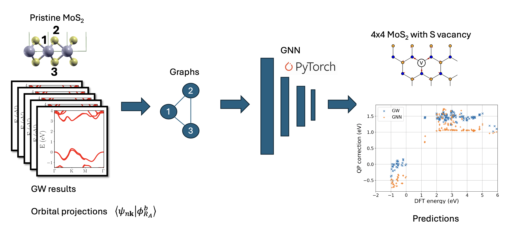
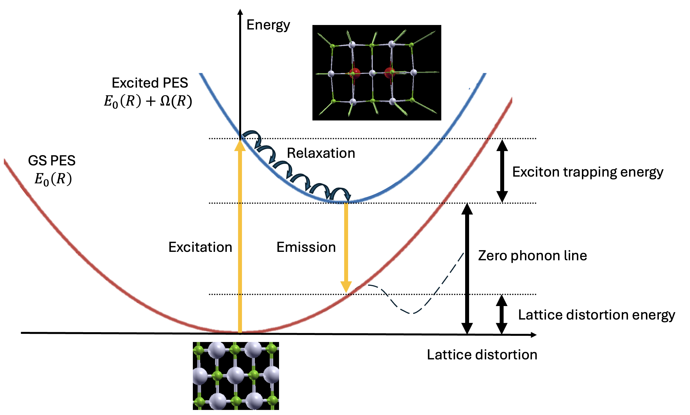
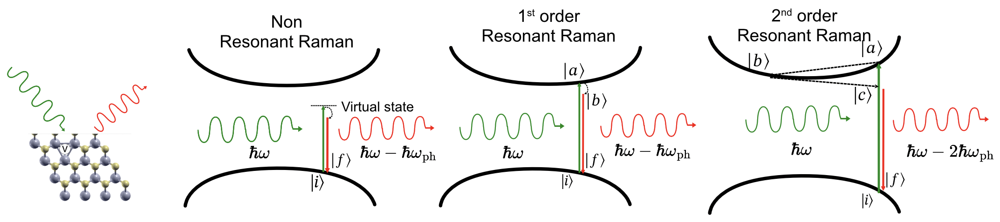

Rafael R. Del Grande
Postdoctoral Scholar at University of California, Merced
Postdoctoral Scholar at University of California, Merced

GW method is the workhorse to calculate the bandgap of materials, but its computational cost is higher than typical DFT calculations, limiting its use for systems with small number of atoms per unit cell. In this project I developed a Graph Neural Network (GNN) to predict GW corrections to DFT calculations and applied it to MoS2 with a sulfur vacancy, obtaining results with precision of full GW calculations but at a fraction of the computational cost.
You can find the code here: Github repository

When a material absorbs light it goes from a ground potential energy surface to an excited potential energy surface. After the this excitation it experiences an excited state forces that leads to several phenomena, like exciton self-trapping, coherent phonon generation, etc. Using the Hellman-Feynman theorem the excited state forces related to exciton can be calculated by combining excitonic effects from GW-BSE calculations and electron-phonon coefficients from DFPT calculations.
In this project I implemented a Python code to calculate excited state forces in a practical workflow combining results from BerkeleyGW and Quantum Espresso. You can find it here: Github repository
Details on benchmark, mathematical derivation, etc can be found here: ESF paper

Raman scattering is the process by which light is inelastically scattered in a material creating and destroying phonons. When the excitation energy matches the electronic transition energy of a material, the Raman scattering is called resonant Raman scattering. In this project we use ab initio exciton-phonon matrix elements calculated with our excited state forces code to calculate Raman cross sections. For second-order resonant Raman, I also included second-order exciton-phonon matrix elements based on the acoustic sum rule. To make better visualizations of a massive quantity of data, I also implemented interactive visualizations in HTML pages.
The resonant Raman code is part of the excited state forces repository. You can find it here: Github repository
In this paper I explain how to choose efficiently the size of the Bethe-Salpeter Equation (BSE) Hamiltonian for accurate exciton calculations on supercells. We analize extensively the convergence of exciton energies regarding how many bands are used to build the BSE Hamiltonian considering the tradeoff between accuracy and computational cost. It was published in Physical Review B and you can find the paper here: [DOI] [PDF] Also we have a Jupyter Notebook and Data at Zenodo